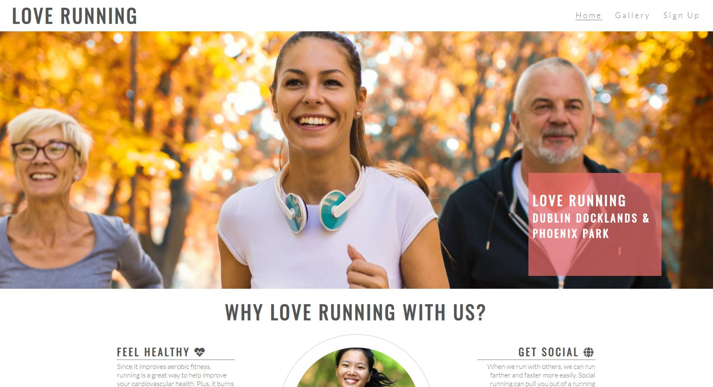
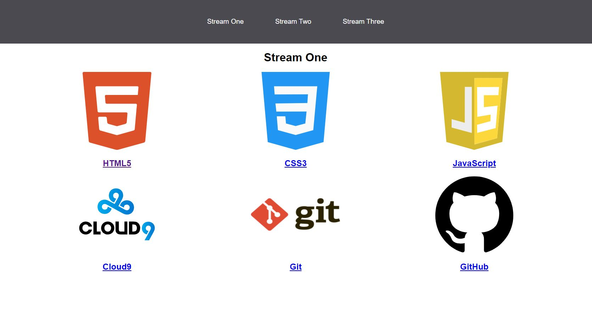
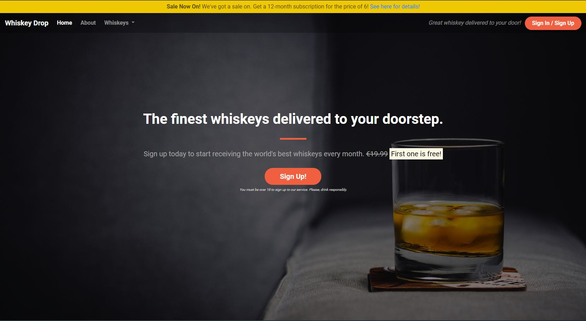
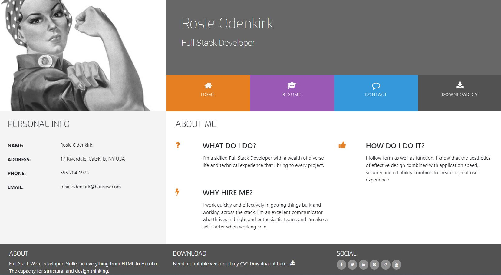

Project Profolio
A placeholder for all sites that has been developed during the duration of my course. It demostrate the different programming languages used to develop the sites.

Love Running
A scheduled based for individuals who would like to run as well as a photo gallery to show the fun that is part of the group.
Visit Me!

Stream
To educate individuals how to program as well as well as short cuts to different online tools that is involved in building websites
Visit Me!

Whisky Drop
To advertise a promotion on whisky that is currently on offer when signing up to a monthly subscritpion.
Visit Me!

Rosie Resume
To create an online Resume for Rosie which show tells her skills as have access to her CV, with quick links to her soical media.
Visit Me!